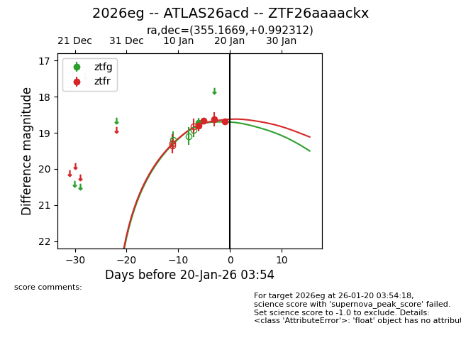
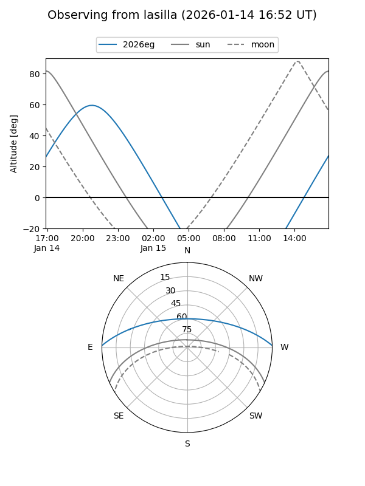
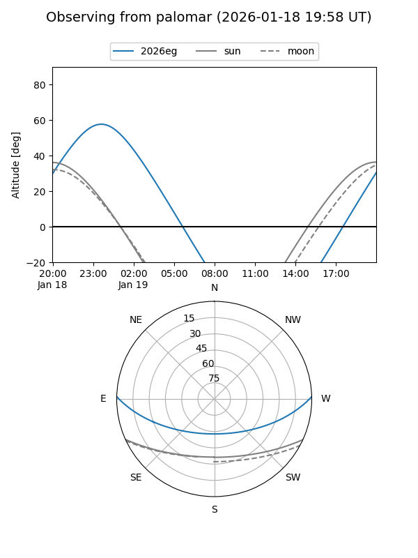
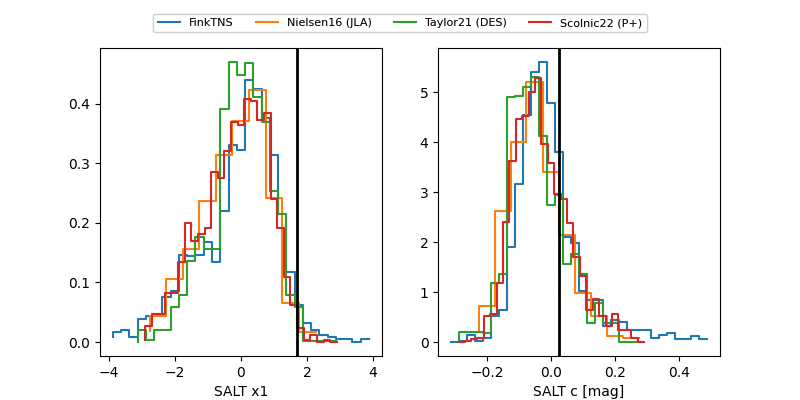

2026eg
Target 2026eg at 2026-01-17 20:02
Aliases and brokers:
FINK: link
Lasair: link
ALeRCE: link
TNS: link
YSE: link
alt names
ZTF26aaaackx (ztf,fink_ztf)
2026eg (tns,yse)
ATLAS26acd (atlas)
Coordinates:
equatorial (ra, dec) = 355.1669,+0.99231
equatorial (HMS+DMS) = 23:40:40.05,+00:59:32.32
galactic (l, b) = (88.8886,-57.12621)
Flags:
Photometry:
last ztfg=18.72, ztfr=18.63
1 ztfg, 3 ztfr detections
Lightcurve

Visibility


Additional plots
